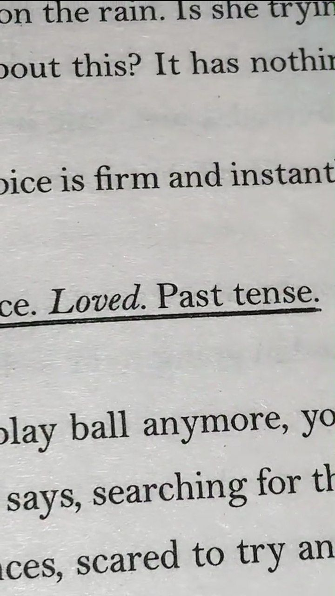

* ੈ✩‧₊˚ NIRNAMA
A nameless warrior has become the talk of the town.
His light-hearted attitude helped the people
all over the Peninsular Land ,
and bravely resisted the tyranny of the holy Jagat people
making himself the talk of the people.
♡
No one knows his name.
Then people started calling it Nirnama - Nameless
♡
I like this book because it has a
storyline is based on Malay and Islamic examples.
In fact, it has a solid illustration
📸 YANG PALING PATAH ANTARA KITA
" Are you okay ? "
Briefly.
But the hardest to answer.
Even if the questioner is his closest friend.
♡
I like this book because this
book opens our eyes and minds
about the importance of mental health.
This book is very sad ,
so I recommend preparing a box of tissues.
🦋🌻 WILL YOU LOVE ME ? 🌻🦋
“ Hardship may dishearten at first ,
but every hardship passes away.
All despair is followed by hope;
all darkness is followed by sunshine. ”
♡
they soon realised that while
a life designed by God is beautiful ,
it is not without obstacles .
♡
Just as Nieza began to feel like she belonged ,
her faith was put to the test.
†ALL THIS TIME ”

Kyle and Kimberly have been the perfect couple
all through high school , but when
Kimberly breaks up with him on
the night of their graduation party ,
Kyle’s entire world upends—literally.
Their car crashes and when he awakes,
he has a brain injury.
Kimberly is dead.
And no one in his life could possibly understand.
♡